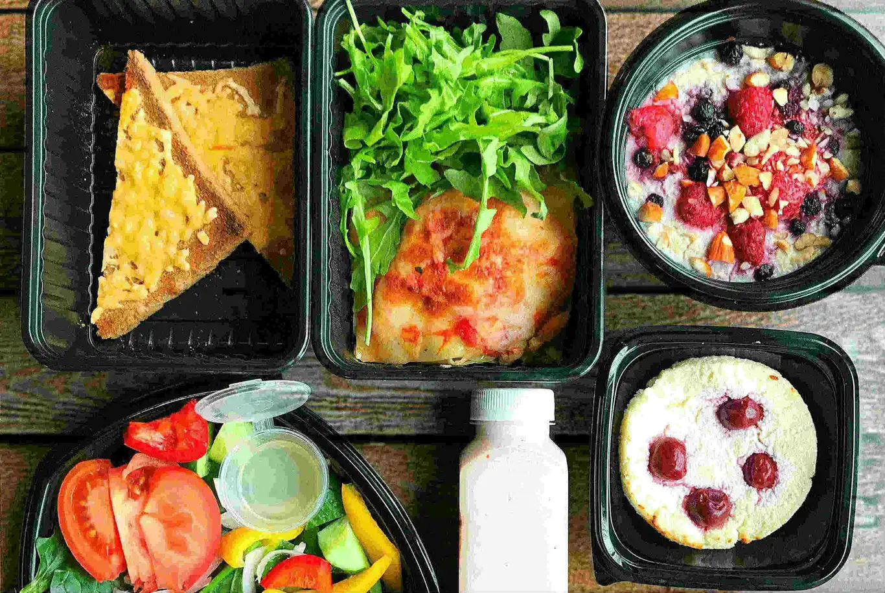
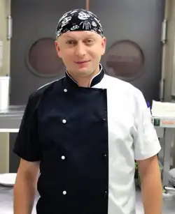

Лёгкий старт
Снижение веса
Лёгкий рацион с готовыми порциями, чтобы уделять больше внимания себе.
от 8 250 ₸ / день
За 1 день — от 8 250 ₸
- 5 приёмов пищи
- от 900 ккал
- Доставка включена
- Новое меню каждый день

Готовые рационы на каждый день.
Мы готовим и доставляем — ты занимаешься собой.
Ответь на три вопроса — поможем выбрать программу.
Актуальные условия предложения уточни у сервиса.
От лёгкого старта до насыщенных тренировок.
Готовим, считаем и привозим каждый день.
Лёгкий рацион с готовыми порциями, чтобы уделять больше внимания себе.
Полноценное питание на каждый день без покупок, готовки и подсчётов.
Больше энергии для тренировок, активных дней и твоих новых целей.
Базовая стоимость указана за день. Итоговая цена зависит от калорийности и условий программы.
Загружаем карусель блюд…
Блюда, повара и оценки в карусели иллюстративные. Меню выбранной программы согласуется перед заказом.
Выбери программу и познакомься с рационом за один день.
Истории клиентов Health Food.
Нажми на карточку, чтобы посмотреть видео.
Помогаем сделать питание частью удобной повседневной жизни. Продумываем меню, готовим порции и доставляем их к началу дня.
Взгляни на наш сервис изнутри — от идеи рациона до готового блюда.
За привычкой питаться хорошо
стоит работа целой команды.
Основатель Health Food
Шеф-повар

Су-шеф
Повар холодного цеха
Повар горячего цеха
Выбери программу и познакомься с рационом за один день.
Наша задача — освободить твой день от постоянного вопроса «что приготовить?». Покупки, приготовление, порции и доставка уже включены в сервис.
Выбери цельСнижение, поддержание веса или набор массы.
Согласуй деталиКалорийность, дату начала и особенности питания.
Встречай утроРацион приедет по Алматы с 06:00 до 10:00.
Больше о питании — в блоге Health Food.
Health Food — готовые рационы для разных целей: снижения веса, поддержания формы и набора массы. Выбери программу по своему ритму и согласуй подходящую калорийность. Меню распределено на несколько приёмов пищи, а блюда приезжают готовыми.
Ежедневная доставка по Алматы с 06:00 до 10:00 помогает начать день без покупок и готовки. Можно познакомиться с форматом за пробный день или спланировать питание на более длительный срок.
Сравнить программы питанияПоможем разобраться с программами, меню и доставкой.
+7 747 094 00 44Ежедневно с 10:00 до 19:00По Алматы, с 06:00 до 10:00.
Включена в стоимость программы.